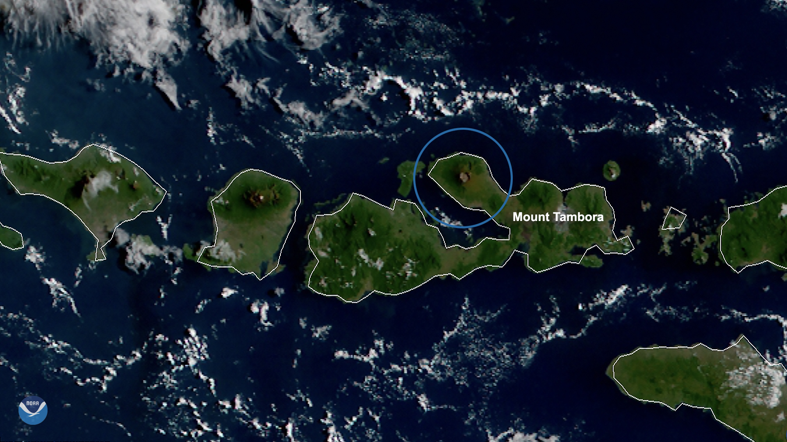
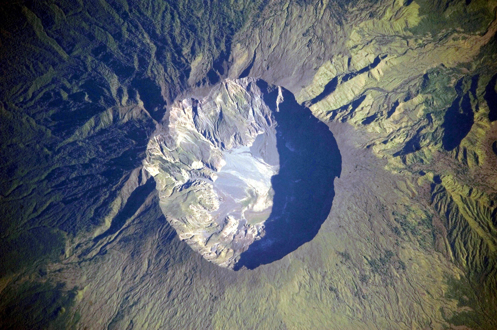
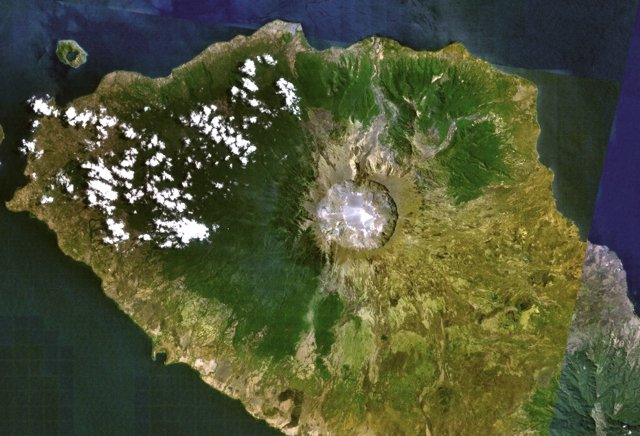
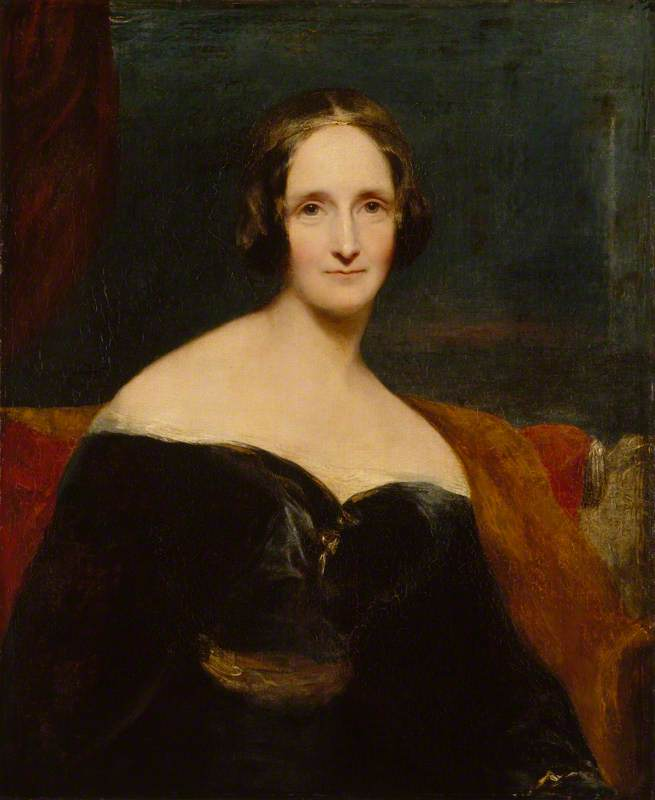

Pada malam 5 April 1815, orang-orang di Jawa mendengar bunyi seperti tembakan meriam dari kejauhan. Pasukan dikirim dari Yogyakarta — dikira ada pos tetangga yang diserang. Kapal-kapal dikirim menyelamatkan kapal karam — yang ternyata tidak ada. Itu bukan perang. Itu Gunung Tambora, di Pulau Sumbawa, ±1.300 km jauhnya, yang mulai meledak. Lima hari kemudian, pada 10 April 1815, datang letusan puncaknya: letusan gunung berapi terbesar dalam sejarah manusia yang tercatat.

Malam yang Dikira Perang
Sir Stamford Raffles — Letnan Gubernur Jawa saat itu — mencatatnya dalam memoarnya. Bunyi letusan awal 5 April "hampir secara universal dikira tembakan meriam dari kejauhan", tulisnya. Saking meyakinkannya, satu detasemen pasukan dimarsir keluar dari Yogyakarta karena mengira ada pos yang diserang, dan dua kapal dikirim ke laut mencari kapal dalam bahaya. Di Batavia tercium bau belerang, dan hujan abu turun berhari-hari.
Ini detail yang layak direnungkan: era itu adalah era perang — Napoleon sedang kembali berkuasa di Eropa (era "100 hari"-nya dimulai Maret 1815). Wajar jika telinga orang pertama-tama mendengar "perang", bukan "gunung meledak 1.300 km jauhnya". Tetapi yang meledak memang jauh lebih besar dari perang mana pun tahun itu.
10 April: Gunung yang "Menciut"
Pada malam 10 April 1815, Tambora memasuki fase paroksismal. Kolom abu dan gas menjulang ±43 km ke stratosfer. Aliran piroklastik — awan panas berkecepatan ratusan km/jam — menyapu lereng dan menghancurkan semua permukiman dalam jangkauannya. Ledakan terdengar hingga ±2.600 km jauhnya (sebagian catatan menyebut hingga 3.350 km); abu jatuh hingga ±1.300 km; gelap gulita menyelimuti wilayah hingga 600 km dari puncak selama dua hari.
Skalanya: VEI 7 — satu-satunya letusan sebesar itu sejak Danau Taupo ±180 Masehi. Diperkirakan ±160 km³ material terlempar (estimasi bervariasi antar-peneliti). Sebelum meledak, Tambora adalah salah satu puncak tertinggi di kepulauan Indonesia — ±4.300 meter. Setelahnya: 2.851 meter. Sepertiga gunungnya hilang, digantikan kaldera selebar 6–7 km dan sedalam 600–700 m. Kaldera itu masih bisa dilihat dari antariksa sampai hari ini.

≥71.000 Jiwa — dan "Pompeii dari Timur"
Ini adalah letusan gunung berapi paling mematikan dalam sejarah tercatat: korban tewas sedikitnya 71.000 jiwa. Hanya 11.000–12.000 yang tewas langsung oleh letusannya; mayoritas sisanya meninggal karena kelaparan dan penyakit setelah abu vulkanik menghancurkan pertanian di Sumbawa dan sekitarnya. (Angka 92.000 yang sering dikutip dinilai para peneliti terlalu tinggi.)
Di antara yang hilang adalah budaya Tambora itu sendiri — komunitas dengan bahasa dan identitasnya sendiri di lereng gunung. Pada 2004, tim gabungan University of Rhode Island dan Direktorat Vulkanologi Indonesia menggali sebuah pemukiman yang terkubur — menemukan rumah dan dua penghuninya di bawah ±3 meter abu, terawetkan dalam posisi mereka saat 1815. Situs itu dijuluki "Pompeii of the East" — Pompeii dari Timur.
Catatan redaksi: para korban adalah orang-orang Sumbawa — mereka bukan sekadar angka. Letusan ini juga memicu tsunami hingga 4 meter yang menghantam kepulauan Indonesia.
1816: Tahun Tanpa Musim Panas
Yang membuat Tambora penting bagi dunia bukanlah kehancuran lokalnya — melainkan apa yang terjadi setelahnya, di belahan dunia yang bahkan tak mendengar ledakannya. Letusan menyuntikkan ±60 ton metrik sulfur ke stratosfer — ±6 kali lipat letusan Pinatubo 1991 — yang berubah menjadi aerosol sulfat dan memantulkan sinar matahari selama ±2 tahun.
Hasilnya: 1816 dikenal sebagai "Year Without a Summer" — Tahun Tanpa Musim Panas. Suhu rata-rata Belahan Bumi Utara turun ±1°F. Salju turun di New England pada bulan Juni dan Juli 1816. Pada 4 Juli 1816, suhu tertinggi di Savannah, Georgia hanya 46°F (±8°C). Danau membeku di Pennsylvania pada bulan Juli. Irlandia diguyur hujan tanpa henti selama delapan minggu. Di Italia dilaporkan "salju merah".
Panen gagal di sebagian besar Belahan Bumi Utara. Ternak mati. Harga pangan melonjak. Ini menjadi kelaparan terburuk abad ke-19, disertai kerusuhan pangan di Prancis dan Swiss. Di Amerika, petani-petani New England yang panennya gagal bermigrasi ke barat — ke New York, Ohio, Indiana — mempercepat ekspansi Amerika ke barat. Di Tiongkok, Provinsi Yunnan mengalami tiga tahun gagal panen beruntun.

Monster yang Lahir dari Musim Panas yang Hilang
Dan inilah bagian yang paling gila: Frankenstein lahir dari letusan Tambora.
Musim panas 1816, di Villa Diodati tepi Danau Jenewa, Swiss: Mary Wollstonecraft Godwin (18 tahun — kelak Mary Shelley), kekasihnya penyair Percy Shelley, Lord Byron, dan dokter John Polidori terjebak di dalam rumah selama berminggu-minggu karena cuaca buruk yang tak kunjung reda. Untuk mengusir bosan, Byron mengusulkan lomba: masing-masing menulis cerita hantu.
Dari lomba iseng itulah Mary menulis draf Frankenstein (terbit 1818) — novel horor paling ikonik sepanjang masa. Dari kelompok yang sama lahir pula The Vampyre (1819) karya Polidori — cikal bakal Drakula. Byron sendiri menulis puisi "Darkness", tentang dunia yang kehilangan matahari. Tanpa gunung meledak di Sumbawa, tidak ada musim panas yang hilang di Jenewa — dan mungkin tidak ada Frankenstein.

Gunung di Sumbawa meledak → salju turun di Amerika pada bulan Juli → seorang remaja 18 tahun terjebak di vila Swiss menulis cerita hantu yang jadi legenda. Itulah rantai Tambora.
Kolera? (Klaim dengan Atribusi)
Sejumlah peneliti — termasuk sejarawan Gillen D'Arcy Wood dalam bukunya Tambora: The Eruption That Changed the World — juga mengaitkan Tambora dengan pandemi kolera pertama (1817–1824) yang bermula di Bengal: gangguan pola monsun pasca-letusan diduga memfasilitasi penyebaran patogen. Ini hipotesis, bukan konsensus ilmiah — kami menyajikannya sebagai dugaan sejumlah peneliti, bukan fakta bulat. Wood juga mengaitkan krisis iklim 1815–1818 dengan depresi ekonomi pertama Amerika dan gejolak politik Eropa pasca-Napoleon — lagi-lagi sebagai argumennya, bukan fakta yang sudah mapan.
Analisis: Dibaca Pakai Lensa Ketahanan Nasional
1. Satu gunung di Indonesia pernah mengubah iklim planet selama dua tahun. Indonesia duduk di Ring of Fire — zona subduksi dengan lempeng yang bergerak ±7,8 cm per tahun. Tambora adalah bukti geologis bahwa bencana Indonesia bukan urusan lokal: ia berskala planet. Kesiapsiagaan bencana — pemantauan PVMBG, sistem peringatan dini, kesiapan komunitas di kawasan rawan — adalah infrastruktur ketahanan nasional, bukan sekadar urusan cuaca.
2. Bencana besar selalu menagih lewat rantai yang tak terduga. Letusan → aerosol → gagal panen → kelaparan → migrasi massal → gejolak sosial → karya sastra. Rantai kausal bencana tidak berhenti di kawah. Negara yang tangguh adalah yang memetakan rantai kedua dan ketiga — pangan, kesehatan, stabilitas sosial — bukan cuma yang pertama.
3. Catatan sejarah adalah sistem peringatan dini. Raffles mencatat bunyi "meriam" itu dalam memoarnya; para arkeolog 2004 membaca ulang abu 1815. Setiap bencana meninggalkan arsip — dan arsip yang dibaca serius hari ini adalah korban yang lebih sedikit esok hari. Menghormati korban Tambora artinya memastikan pelajarannya tidak terkubur seperti pemukiman mereka.
Arsip & Referensi
Angka dan peristiwa di artikel ini diverifikasi silang dari sumber-sumber berikut:
- Wikipedia — "1815 eruption of Mount Tambora", "Mount Tambora" (linimasa, VEI 7, korban ≥71.000, tinggi 4.300 m → 2.851 m, kaldera 6–7 km).
- NOAA NESDIS — "This Day In History: Mount Tambora Explosively Erupts in 1815" (VEI 7, Year Without a Summer, salju Juli 1816).
- NASA Earth Observatory / NOAA — citra satelit kaldera Tambora.
- Clive Oppenheimer, "Climatic, environmental and human consequences of the largest known historic eruption: Tambora volcano (Indonesia) 1815" — aerosol sulfur ±60 Tg (±6× Pinatubo).
- Sir Stamford Raffles, memoir (dikutip via 100days.org.uk & Wikipedia) — bunyi dikira meriam, pasukan dari Yogyakarta.
- Lt. Philips, laporan ke Raffles (dikutip via totheroot.substack.com) — kondisi Sumbawa pasca-letusan.
- Rilis NASA via toplist.info — ekskavasi 2004 "Pompeii of the East" (URI + Direktorat Vulkanologi Indonesia).
- Farmers' Almanac — "1816: The Year Without a Summer" (suhu, salju Juni, migrasi ke barat AS).
- National Geographic — "Mary Shelley wrote 'Frankenstein,' and created modern horror" (Villa Diodati, cuaca 1816).
- HistoryExtra — inspirasi Frankenstein & The Vampyre dari lomba cerita hantu 1816.
- Gillen D'Arcy Wood, Tambora: The Eruption That Changed the World (via ulasan LRB & Kottke/NYT) — argumen kolera, depresi AS, langit Turner; disajikan dengan atribusi.
Kredit foto arsip: Himawari-8 10 April 2020 — NOAA NESDIS (via Wikimedia Commons), public domain; kaldera dari ISS — NASA Earth Observatory (via Wikimedia Commons), public domain; mosaik Landsat — NASA Landsat (via Wikimedia Commons), public domain; potret Mary Shelley oleh Richard Rothwell, 1830-an — National Portrait Gallery London (via Wikimedia Commons), public domain.
Catatan redaksi: angka 92.000 korban kami anggap terlalu tinggi mengikuti penilaian peneliti (pakai ≥71.000). Volume material terlempar bervariasi antar-estimasi — kami tidak menyajikan satu angka pasti. Kaitan Tambora dengan pandemi kolera pertama adalah hipotesis sejumlah peneliti, bukan konsensus. Kami tidak memakai ilustrasi dramatis tanpa lisensi jelas; semua foto di atas terverifikasi public domain.
Gunung di Sumbawa, salju di Amerika bulan Juli, monster di Danau Jenewa — itulah rantai Tambora. Versi ringkasnya ada di Instagram & TikTok @jejakkuasa — follow biar nggak ketinggalan titik balik berikutnya.